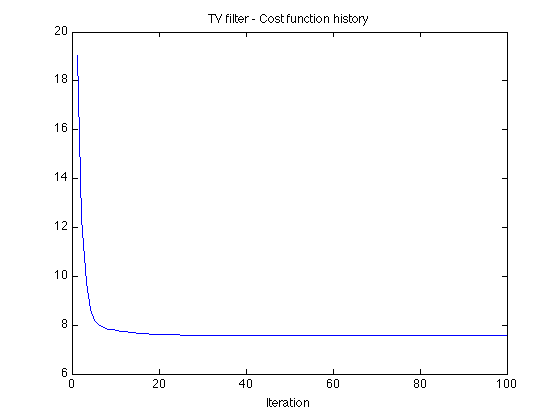

Example 1: Polynomial approximation + total variation filtering
Example: Simultaneous least-square polynomial approximation and total variation filtering.
Ivan Selesnick, Polytechnic Institute of NYU December 2011 Email: selesi@poly.edu Reference: Polynomial Smoothing of Time Series with Additive Step Discontinuities I. W. Selesnick, S. Arnold, and V. R. Dantham
Contents
Start
clear close all printme = @(filename) print('-dpdf', sprintf('figures/Example1_%s', filename));
Create test signals
N = 100; % N : length of data n = (1:N)'; s1 = n < 0.3*N; % s1 : step function s2 = 2-2*((n-N/2)/(N/2)).^2; s2 = s2 + n/N; % s2 : polynomial function randn('state',0); % Initialize randn so that example can be exactly reproduced noise = randn(N,1); sigma = 0.26; noise = noise / sqrt((1/N)*sum(noise.^2)) * sigma; % Gaussian (normal) noise
Polynomial approximation
Show polynomial approximation of noisy polynomial data
a = polyfit(n,s2+noise,2); s2pf = polyval(a, n); figure(1) clf plot(n, s2 + noise, '.k', n, s2pf); title('Polynomial approximation to noisy polynomial data') printme('polyfit')
TV filtering of noisy step data
lambda = 1.6; % lambda : regularization parameter for TV filter Nit = 100; % Nit : number of iterations for TV filter algorithm [x_tv, cost] = TVfilt(s1+noise, lambda, Nit, 1.5, 10); figure(1) plot(cost) title('TV filter - Cost function history') xlabel('Iteration')
Output of TV filter
figure(1) plot(n, s1 + noise, '.k', n, x_tv); title('(a) Total variation filtering of noisy step data'); printme('TV_filter')
Least-square filtering of noisy step data
lambda = 10; % lambda : regularzation parameter for least squares filter e = ones(N-1, 1); D = spdiags([e -e], [0 1], N-1, N); % D : first-order different matrix (sparse) H = speye(N) + lambda*(D'*D); % H : I + lambda D'*D (sparse) x_l2 = H \ (s1+noise); figure(1) plot(n, s1 + noise, '.k', n, x_l2); title('(b) Least-squares filtering of noisy step data'); printme('L2_filtered')
Create noisy signal
Create polynomial signal with additive step discontinuity
s = s1 + s2; % s : polynomial signal with additive step discontinuity y = s + noise; % y : noisy signal figure(1) plot(n, y, '.k') title('(a) Noisy data'); printme('data')

PATV: Polynomial approximation + total variation filter
Example
% parameters d = 2; % d : degree of approximation polynomial lambda = 3; % lambda : regularization parameter Nit = 100; % Nit : number of iterations mu0 = 20; % mu0 : ADMM parameter mu1 = 0.2; % mu1 : ADMM parameter [x, p, cost] = patv(y, d, lambda, Nit, mu0, mu1); % display cost function history figure(1) plot(cost) title('PATV algorithm - Cost function history'); xlabel('Iteration') printme('PATV_convergence')
Display calculated TV component
figure(1) plot(n, x, 'k') title('(b) Calculated TV component (PATV)'); printme('PATV_TV_component')
Display TV-compensated data
figure(2) clf plot(n, y - x, '.k') title('(c) TV-compensated data (PATV)'); printme('PATV_TV_compensated_data')
Display estimated signal
figure(1) plot(n, y,'.k', n, x+p, 'black') title('(d) Estimated signal (PATV)'); legend('Data','Estimated signal', 'Location','south') printme('PATV')
Display first-order difference of TV component. Note: there are 3 non-zero values
figure(2) stem(abs(diff(x)),'marker','none') title('|diff(x)|');
Lambda too small
When lambda is too small, the noise is not fully reduced
lambda = 0.2; [x, p, cost] = patv(y, d, lambda, Nit, mu0, mu1); figure(1) plot(n, y,'.k', n, x+p, 'black') title('(a) Estimated signal (PATV with \lambda too small)'); legend('Data','Estimated signal', 'Location','south') printme('PATV_lambda_small')
Lambda too large
When lambda is too large, the step discontinuity is under-estimated
lambda = 7; [x, p, cost] = patv(y, d, lambda, Nit, mu0, mu1); figure(2) plot(n, y,'.k', n, x+p, 'black') legend('Data','Estimated signal', 'Location','south') title('(b) Estimated signal (PATV with \lambda too large)'); printme('PATV_lambda_large')
C-PATV: Constrained formulation
r = sqrt(N) * sqrt(sum((1/N)*(noise.^2))); % r : constraint parameter Nit = 50; % Nit : number of iterations mu0 = 3.5; % mu0 : ADMM parameter mu1 = 0.5; % mu1 : ADMM parameter [x_constr, p_constr, cost, constr] = cpatv(y, d, r, Nit, mu0, mu1); % check constraint: e = y - x_constr - p_constr; sqrt((1/N)*sum ( e.^2)) % This value should be r/sqrt(N). % Cost function versus constraint function histories figure(1) plot(constr, cost,'.-'); xlabel('Constraint') ylabel('Cost') title('Cost vs. Constraint (C-PATV)') ax3 = axis; line([1 1]*r, ax3(3:4), 'linestyle', '--') axis(ax3) printme('CPATV_convergence')
ans =
0.2600
Display estimated signal
figure(1) plot(n, y,'.k', n, x_constr+p_constr, 'black') % , 'MarkerSize',MS) title('Estimated signal (C-PATV)'); legend('Data','Estimated signal', 'Location','south') printme('CPATV')
Enhanced PATV
Lp quasi-norm minimization with p < 1 leads to fewer extraneous steps in the estimated signal
lambda = 3; % lambda : regularization parameter Nit = 100; % Nit : number of iterations mu0 = 20; % mu0 : ADMM parameter mu1 = 0.2; % mu1 : ADMM parameter p = 0.7; % p : power (Lp quasi-norm) E = 0.02; % E : small number [x, p, cost] = patv_Lp(y, d, lambda, p, E, Nit, mu0, mu1); figure(1), clf plot(n, y,'.k', n, x+p, 'black') title('Estimated signal (Enhanced PATV)'); legend('Data','Estimated signal', 'Location','south') printme('enhanced_PATV')
It can be seen that enhanced PATV leads to fewer extraneous steps in the calculated TV component.
figure(1) plot(x) hold off title('Calculated TV component (Enhanced PATV)')
figure(2) stem(abs(diff(x)), 'marker','none') hold off title('|diff(x1)|')